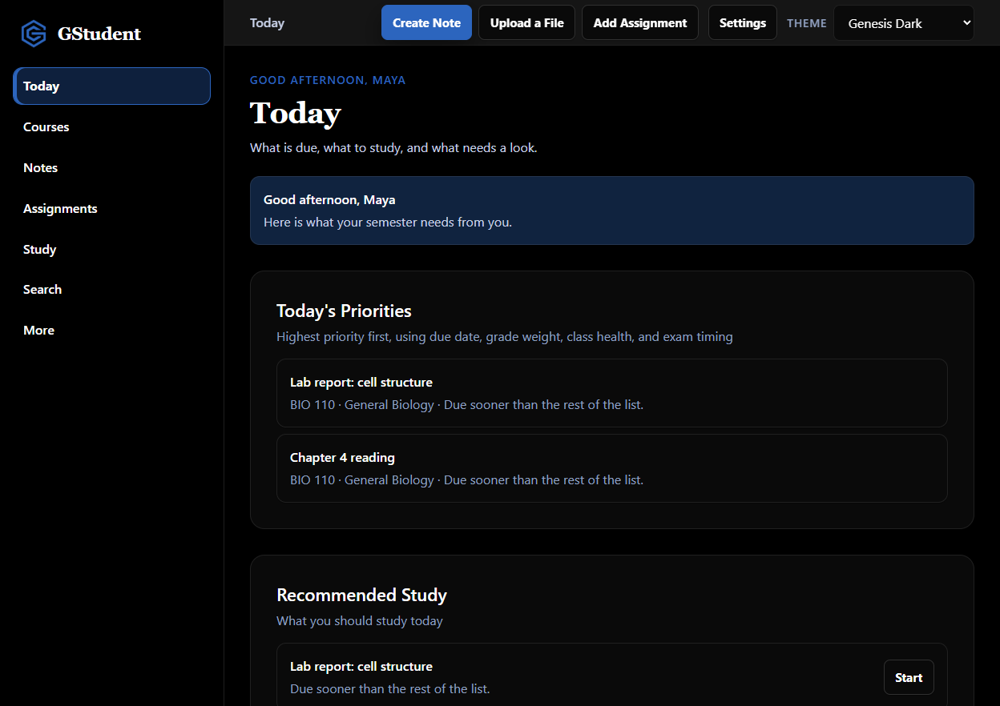
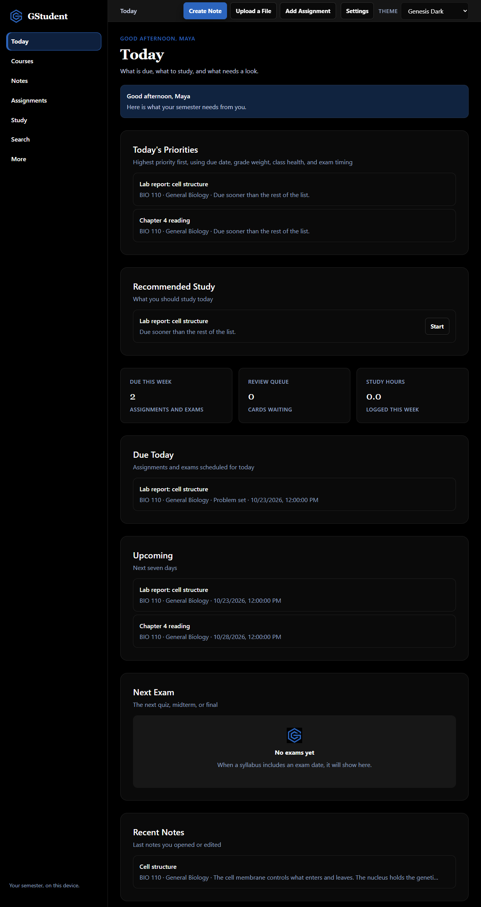
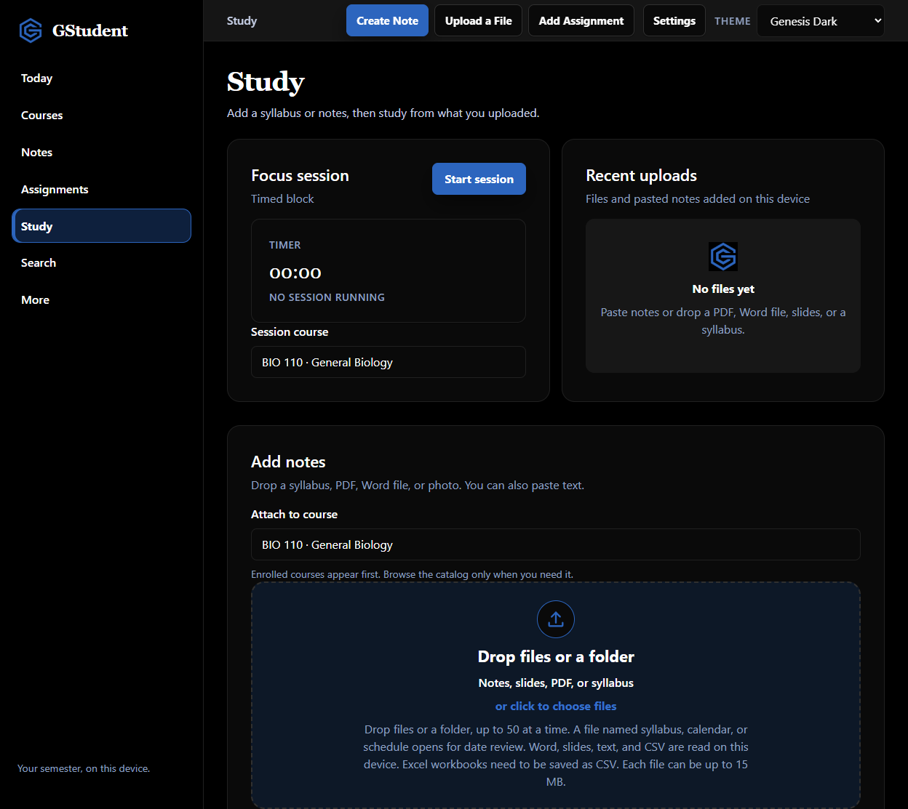
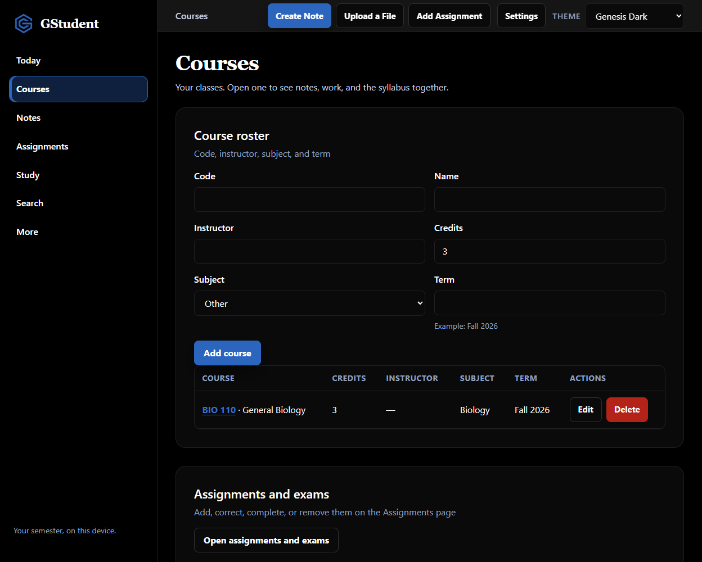
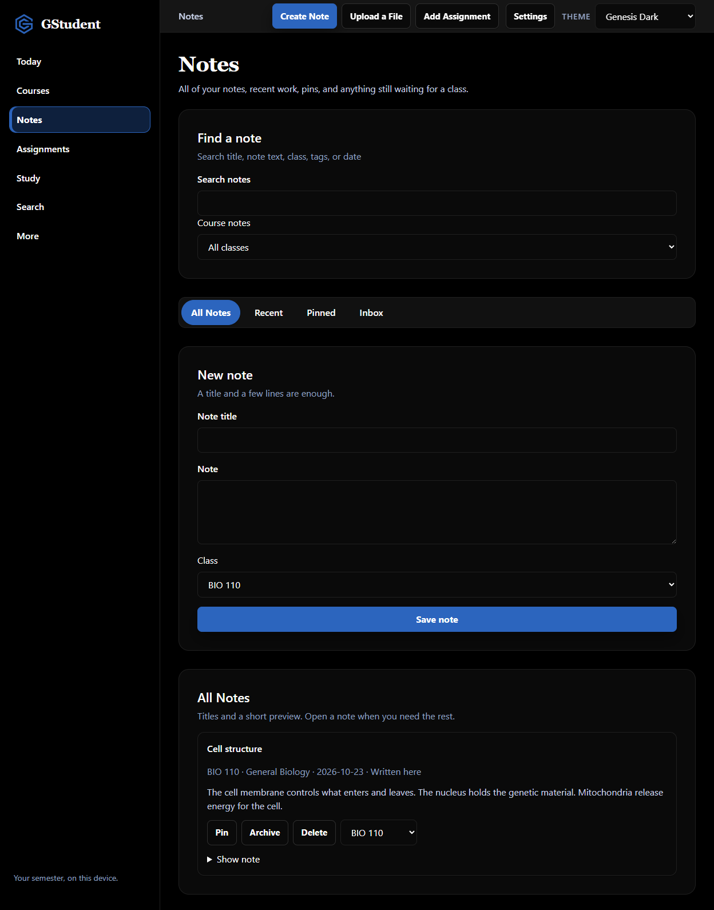
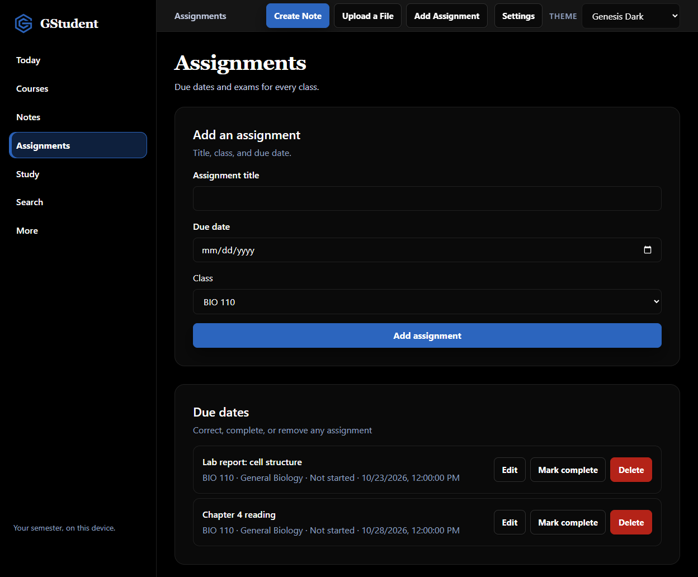

Notes
Class notes sit in one notebook instead of a desktop full of drafts.
GStudent • GenesisOS Labs
Drop your syllabi, notes, slides, & readings into one place. Agents review your files and keep you on track all semester.

The problem
Notes, PDFs, syllabi, assignments, study material, and deadlines pile up across folders, inboxes, and tabs. GStudent puts that work in one workspace on your computer.
Class notes sit in one notebook instead of a desktop full of drafts.
Readings and handouts land on the class you choose, as a note you can reopen.
A syllabus opens for review before any date is added to the semester.
Due dates stay on the class they belong to, where you can correct or complete them.
Slides, readings, and notes are in the same place you open when it is time to study.
Today shows what is due, what is coming up, and the next exam date you approved.
Windows & macOS desktop beta
GStudent is a Windows & macOS desktop beta. You install it on one computer, create a semester, and keep it there. No account.
Today
Today is the page you come back to. Priorities, due today, upcoming work, the next exam, and recent notes are on one screen.

Drop an entire semester
Multi-file upload, up to 50 files at once. Folder drop works in the Windows & macOS desktop app. Click-to-choose selects files.
Extracted text becomes a note on the class selected in Attach to course. The original file bytes are not stored. Excel workbooks need to be saved as CSV. A ZIP is not opened.

Classes, notes, and assignments
Open a class for its notes, assignments, and syllabus reviews. Track due dates from the assignment list. Review a syllabus before any date is saved.
Add a class with a code, name, subject, and term. The roster is the semester. Open a class to see its notes, assignments, and syllabus together.

Write a note on a class, or drop a file and keep the extracted text as a note on the class you selected. If the file is a syllabus, calendar, or schedule, GStudent opens a review first. Dates are not added until you approve them.

Add an assignment with a title, class, and due date. Edit it, mark it complete, or delete it. Exams show here after you approve them from a syllabus review.
Join Free Beta
Questions
No. GStudent does not ask you to create an account. The semester stays on your computer.
No. GStudent does not sync. It runs on one computer. Export a backup and restore it on another computer. A second computer stays empty until you restore that backup.
PDF, Word (DOCX), PowerPoint (PPTX), text (TXT), CSV, RTF, and images (JPG, PNG, WEBP, and GIF). You can drop up to 50 files at once, or a folder in the Windows & macOS desktop app. Each file can be up to 15 MB. Excel workbooks are not read; save the sheet as CSV. HEIC photos need to be saved as JPG or PNG. A ZIP file is not opened; drop the files or the folder instead. Click-to-choose selects files. Folder drop works in the desktop app.
on your computer. Extracted text is saved as a note on the class you pick in Attach to course. The original file bytes are not stored. There is no per-file course guess.
If the file name contains syllabus, calendar, or schedule, or the word syllabus appears near the start of the text, GStudent opens a review. Dates become assignments or exams only after you approve that review.
Yes. Settings → Privacy exports a backup on your computer. You can restore that backup later. The backup stays on your computer.
Join the free Windows & macOS desktop beta. Your semester stays on your computer.
Your semester, on your computer.
Join Free Beta